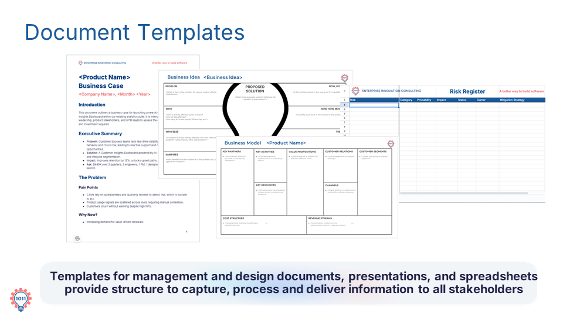

A key component of AI accelerators is the use of document templates to structure, capture, and communicate information seamlessly between humans and AI systems.
You can think of templates as a kind of contract between people and AI. They define how information should be structured, captured, and communicated across management and design documents, presentations, and spreadsheets.
Templates enable faster onboarding and make collaboration significantly easier because everyone follows the exact same structure. Check out the structural breakdown of typical AI document templates below:

CONTRACTHUMAN-AI AGREEMENT: Standardizes layout & expectations for generation.
VARIOUS FORMSFORMAT FLEXIBILITY: MS Word documents or Excel spreadsheets.
EMBEDDED PROMPTSGUIDED OUTPUTS: Directs AI to populate targeted, precise sections.
Understanding Template Components
To leverage document templates effectively in AI workflows, it helps to understand the strategic benefits they provide:
ONBOARDING
Faster Onboarding & Alignment
By enforcing a shared structure across teams, templates eliminate ambiguity and allow new team members or AI agents to start generating compliant work immediately.
STRUCTURE
Standardized Capture & Delivery
Templates ensure information is captured uniformly and delivered clearly to all stakeholders.
PROMPTING
Embedded Guidance System
Many templates feature built-in prompts that guide the AI to generate the correct outputs for specific sections (e.g., Executive Summaries, Pain Points, or Value Propositions).
With structured templates and embedded prompts activated, AI models are constrained to deliver structured, high-value outputs ready for stakeholder review.
Practice
In your LLM interface, execute a template-driven request by creating a structured Business Case section using the following template contract:
TEMPLATE: User Profile/div>
DOCUMENT SECTION: Introduction.
INSTRUCTIONS: First, state the problem and primary user persona. Then, use the introduction prompt.
INTRODUCTION PROMPT: "Write the 'Introduction' section of the document. Describe the purpose and scope of the document, which contains multiple user profiles. Write the output as a single paragraph in less than 50 words that explains how the document helps product teams understand user needs and build accordingly. Audience: 'Product development team, UX/UI designers'"
Review the generated response to verify that the AI stayed strictly within the template structure.